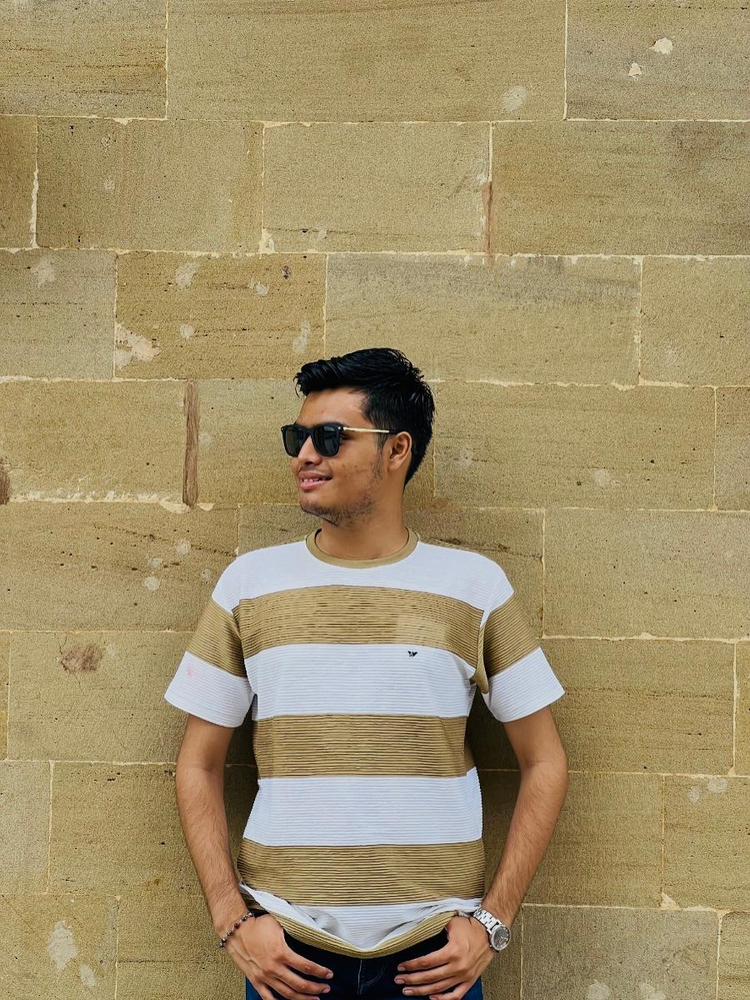

Full-stack development
Building web applications from interface through backend.
01 OVERVIEW
Hi, I’m Karan Raval. I’m a Full-Stack Web Developer, BCA graduate, and current MCA student. I build clean web systems and care about thoughtful details, clear interfaces, and useful technology.

02 IDENTIFICATION
A little context about what I do, what I’m learning, and where I want to go next.
03 ABOUT
BACKGROUND / APPROACHI’m Karan Raval, a Full-Stack Web Developer and MCA student.
I completed my Bachelor of Computer Applications and am currently pursuing a Master of Computer Applications. I enjoy building clean web systems and growing my skills across the full stack.
Building web applications from interface through backend.
Focused on clear, useful experiences and maintainable code.
04 TECHNICAL STACK
TOOLS I USE / THINGS I’M LEARNINGGrouped by how I use them. Update these lists to reflect the tools you’ve used in real projects.
05 SELECTED WORK
CLICK A PROJECT TO EXPANDReplace the examples with real projects, what you contributed, and links to demos or source code.
[What the project does, the problem it solves, and your contribution. Add measurable outcomes only when you can support them.]
[Briefly describe the challenge, your approach, and the result.]
[Briefly describe the challenge, your approach, and the result.]
06 CAPABILITIES
HOW I CAN CONTRIBUTE[What you can contribute and in what context.]
[What you can contribute and in what context.]
[What you can contribute and in what context.]
07 START A CONVERSATION
Have a project, an opportunity, or a good question? I’d be glad to hear from you.
Get in touch ↗Karan2305@gmail.com ↗